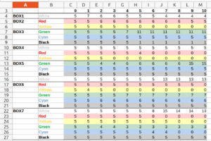
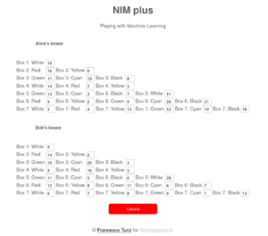
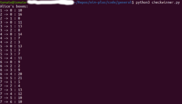
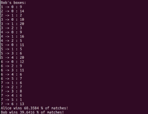

{λ4} Come allenare un algoritmo umano

Portocollo di laboratorio
Mentre una fantomatica “Intelligenza Artificiale” prende piede nell’immaginario collettivo, alcuni algoritmi di apprendimento automatico si fanno largo in varie faccende quotidiane. Per capire e districare questo intreccio istruiamo delle persone a ragionare come una macchina (che impara a ragionare come una persona?)
Scopo
L’obiettivo del laboratorio è di esplorare alcuni meccanismi di apprendimento automatico tramite un gioco di immedesimazione con i processi computazionali di un algoritmo che impara a giocare un semplice gioco di strategia, ispirato a MENACE.
Tempi e modi
A seconda del tempo a disposizione il laboratorio è modulabile in varie fasi, ognuna autoconclusiva.
Il laboratorio può essere effettuato in situazioni informali (e.g. festival o open days), in cui il protocollo può essere seguito in maniera lasca e può essere favorita la conversazione.
Il laboratorio può anche fornire dati interessanti sul comportamento dei e delle partecipanti (v. Raccolta e analisi dati). In questo caso lo chiamiamo “osservativo”, e nella fase 1 il protocollo deve essere seguito alla lettera.
Partecipanti
Due squadre di massimo cinque persone l’una. Età qualunque.
Nel caso del laboratorio osservativo, è preferibile costituire gruppi omogenei per età; altrimenti è preferibile la massima eterogeneità.
Materiali e costi
- Sedici scatole o contenitori non trasparenti, non necessariamente identici.
- Qualche centinaio di perline colorate di sei colori diversi, o altri oggetti colorati e identici al tatto (per esempio tasselli del domino, biglie, gettoni etc.).
- Materiale ordinario di cancelleria.
- Due clessidre da due minuti (o alternative analoghe).
- Almeno un computer o smartphone connesso a internet. Nel laboratorio osservativo sono comodi due computer per registrare i dati.
Costo complessivo: meno di 100 €.
Fase 1
1) Preparazione del materiale
Supponiamo che i colori a disposizione siano Bianco, Rosso, Giallo, Verde, Azzurro, Nero (rispettivamente B, R, G, V, A, N).
Otto scatole vengono numerate da 0 a 7. Nelle scatole (colonna “da”) vengono messe dieci perline per ognuno dei colori indicati nella colonna “perline”:
| da | perline | a |
|---|---|---|
| 0 | ||
| 1 | B | 0 |
| 2 | R, G | 0, 1 |
| 3 | V, A, N | 0, 1, 2 |
| 4 | B, R, G | 0, 1, 2 |
| 5 | V, A, N, B | 0, 1, 3, 4 |
| 6 | R, G, V, A, N | 0, 2, 3, 4, 5 |
| 7 | B, R, G, V, A, N | 1, 2, 3, 4, 5, 6 |
Notare che la scatola 0 è vuota. Più tardi spieghiamo la funzione della colonna “a”.
Le altre otto scatole vengono preparate nella medesima maniera.
2) Preparazione delle squadre
Si formano due squadre concorrenti (squadra Alice e squadra Bob) e viene dato loro un assortimento di otto scatole, oltre che un certo quantitativo di perline aggiuntive di tutti i colori (in uguale quantità per entrambe le squadre). Alle squadre riunite viene spiegato, con assoluta chiarezza, che:
- Avverrà una partita tra la due squadre, e che questa verrà poi ripetuta un certo numero pari di volte, alternando la squadra che inizia. Durante la partita le squadre sono inerti: dovranno solo osservare quello che succede con attenzione.
- Al termine della partita avranno due minuti esatti, cronometrati dalle clessidre, per modificare il contenuto delle sole scatole che sono state coinvolte durante la partita.
- Le scatole non devono rimanere vuote. Non è permesso inserire colori che non erano già presenti in una scatola. I colori nelle scatole sono arbitrari e colori uguali in scatole diverse non hanno nessuna correlazione.
- Lo scopo è vincere quante più partite possibile.
Alla postazione delle squadre ci sarà un foglio che riporta le regole.
A parte questo, nel laboratorio osservativo non viene data altra informazione. In quello “da campo”, per catturare l’attenzione, si può essere più espliciti sul fatto che le scatole codificano NIM+.
Alice e Bob sono messe in due stanze separate o a distanza tale da non potersi ascoltare e vedere.
3) Preparazione della “macchina“
Chiamiamo macchina chi conduce le partite. Può essere una o un gruppo di persone, o un algoritmo. Nel caso del laboratorio osservativo è fondamentale che la macchina sia accurata e assolutamente muta (per non trasmettere involontariamente informazioni utili tra le squadre).
La macchina è dotata della tabella riportata sopra, che non deve assolutamente trapelare alle squadre.
Inoltre nel caso del laboratorio osservativo la macchina è dotata di due computer con aperti i file Alice.ods e Bob.ods, o di due fogli cartacei di presa dati.
La macchina gioca le partite (v. sotto) partendo alternatamente da Alice e Bob, gestisce le clessidre, registra i dati.
4) Il match
Supponiamo parta Alice. La maccina umana si reca da Alice e pesca a caso (magari bendandosi) una perlina dalla scatola 7, e lascia la pallina sul coperchio della scatola richiusa. Poniamo il caso che sia uscita una perlina verde. La macchina consulta segretamente l’ultima colonna della tabella corrispondente alla scatola 7 per stabilire a quale scatola avversaria corrisponde la pallina verde. In questo caso si tratta della scatola 4:
| da | perline | a |
|---|---|---|
| 7 | B, R, G, V, A, N | 1, 2, 3, 4, 5, 6 |
La macchina si reca dunque da Bob e pesca a caso una perlina dalla scatola 4. Se per esempio è uscita gialla, secondo la tabella dovrà ora andare da Alice e pescare una pallina dalla scatola numero 2:
| da | perline | a |
|---|---|---|
| 4 | B, R, G | 0, 1, 2 |
Il gioco si interrompe quando la macchina incontra la scatola vuota, e dichiara la squadra perdente (e l’altra vincente). Mettiamo per esempio che dalla scatola 2 di Alice sia saltata fuori una perlina rossa. Secondo la tabella questa corrisponde alla scatola 0 di Bob. Allora Alice ha vinto e Bob ha perso.
Da notare che durante il match lə partecipanti non fanno nulla, assistono all’azione e basta.
4) L’intervallo
Dopo ogni match si lasciano due minuti cronometrati dalla clessidra alle squadre, che possono intervenire sulle loro scatole secondo le regole stabilite sopra.
5) Raccolta dati
Nella versione “osservativa” del laboratorio, al termine di ogni pausa la macchina registra il contenuto delle scatole. Ne risulta una tabella del tipo:

6) Determinazione del vincente
Al termine della partita, si chiede ad Alice e Bob di completare una tabella con il numero di perline colorate contenute in ogni scatola (nel caso “osservativo”, questa è sostituita dall’ultima colonna della tabella qua sopra). Per esempio (valori puramente casuali):
| da | … | numero Alice | numero Bob |
|---|---|---|---|
| 0 | |||
| 1 | 10 | 9 | |
| 2 | 16, 0 | 14, 2 | |
| 3 | 11, 13, 8 | 10, 20, 3 | |
| 4 | 14, 7, 3 | 9, 16, 5 | |
| 5 | 13, 3, 7, 11 | 11, 5, 6, 20 | |
| 6 | 9, 2, 9, 20, 21 | 12, 9, 11, 6, 7 | |
| 7 | 5, 4, 13, 12, 10, 10 | 6, 7, 8, 6, 1, 13 |
Mentre le due squadre finalmente si incontrano e scambiano qualche opinione, la macchina si apparta per qualche minuto e inserisce i dati di questa tabella in un piccolo software. È possibile usare una app online:

Il codice sorgente in python può essere scaricato liberamente (basta scaricare nimplus.py e checkwinner.py, e lanciare con Python checkwinner.py). Dopo circa un minuto il programma restituisce le percentuali di vittoria di Alice e Bob se giocassero un milione di partite estraendo a caso le perline dalle scatole per come sono alla fine della partita. Questo è il risultato:


6) Discussione
La macchina finalmente svela il gioco a cui hanno giocato le due squadre. Si tratta di una variante del Nim, al terzo livello. Le sette configurazioni, corrispondenti alle scatole numerate, sono queste:
7: ||| , || , |
6: ||| , ||
5: ||| , |
4: |||
3: || , |
2: ||
1: |
0:
Quindi le perline contenute nelle scatole sono mosse giocabili. Il gioco consiste, partendo dalla configurazione 7, nell’eliminare una o più lineette contigue trasformandole in una virgola. Se rimangono gruppi identici di barrette, si eliminano a due a due. Per esempio eliminando la lineetta in mezzo al gruppo di tre (segnata +) nella configurazione 7 si ottengono tre gruppi di singola lineetta, due dei quali si eliminano tra loro:
| + | , || , |
= | , | , || , |
= + , + , || , |
= || , |
che è la configurazione 3. Vince chi elimina l’ultima lineetta.
Si invitano lə partecipanti a giocare qualche match tra loro per familiarizzare con il gioco. Dopo poche ripetizioni ricosceranno delle strategie e si renderanno conto che il gioco è piuttosto banale. Si confrontano le strategie vincenti con le mosse che le loro scatole hanno imparato a giocare, e si discute dei meccanismi di apprendimento automatico messi in atto. In particolare, noi siamo stati di riconoscere tre meccanismi efficaci:
- reinforcement learning: nelle scatole si aggiungono o tolgono un po’ di perline corrispondenti alle mosse che hanno portato a una vittoria o a una sconfitta;
- trimming: in una partita vincente, l’ultima mossa è stata corretta, e conviene togliere tutte le altre perline;
- pruning: in una partita perdente, l’ultima mossa in cui c’era una possibilità di scelta è stata sicuramente sbagliata, e conviene togliere tutte le perline di quel colore.
Realizzazioni
- 10 e 11 Settembre 2021, Mantova, Festivaletteratura.
- 19 Settembre 2021, Lussemburgo, uni.lu FSTM Portes-ouvertes
Osservazioni
Materiale integrativo
Un report più dettagliato sul gioco del Nim+ (in inglese, in costruzione) è reperibile a questo indirizzo.